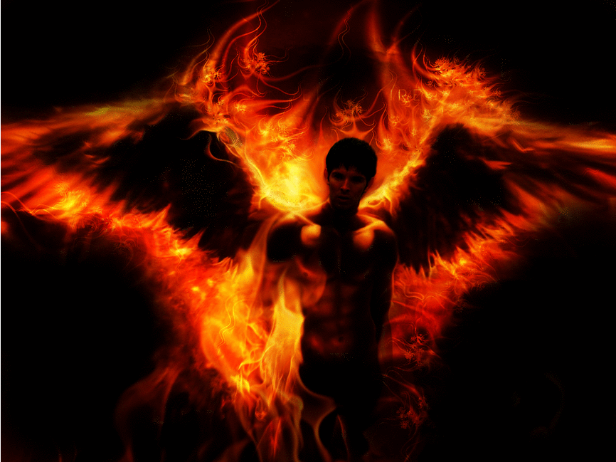
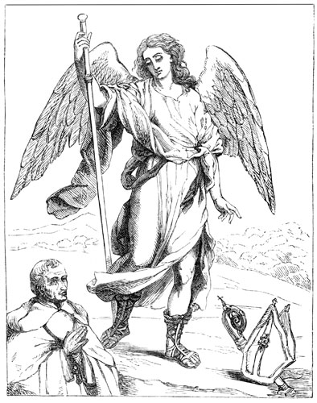
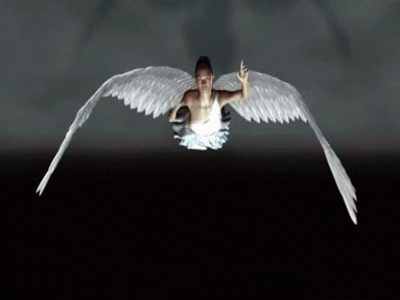

 Archangel Michael Just a word
There are many more Angels than people. We are Watchers, we don't interfere. There are a great many of us all over the Earth.
The wings of the small ones are much larger than depicted. We exist in many realms at the same time. 
The humans are only one of many species here on this planet. Many are bad and attack the people here.
This world is destine for death. It is the only way to destroy the evil here.
The Angels will just leave when this world ends. If the humans can't leave then they also will die.
We can't transport their bodies, there is simply no way. Star Gates or Time Travel can only transport spirits not the bodies of this dimension.